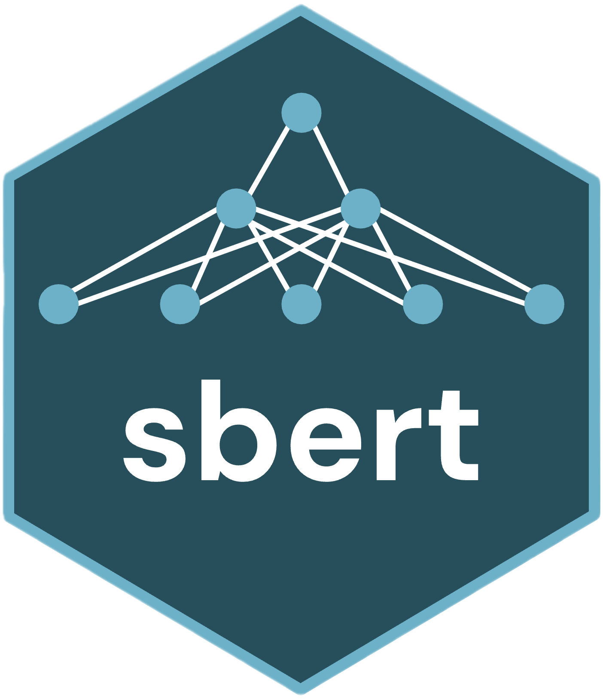
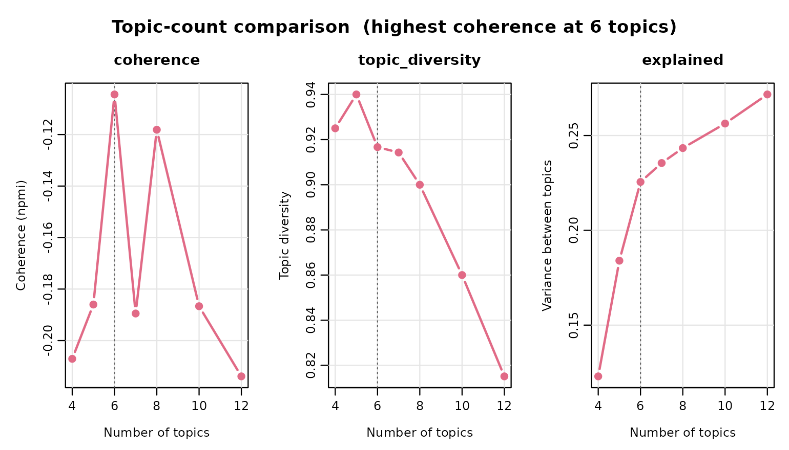
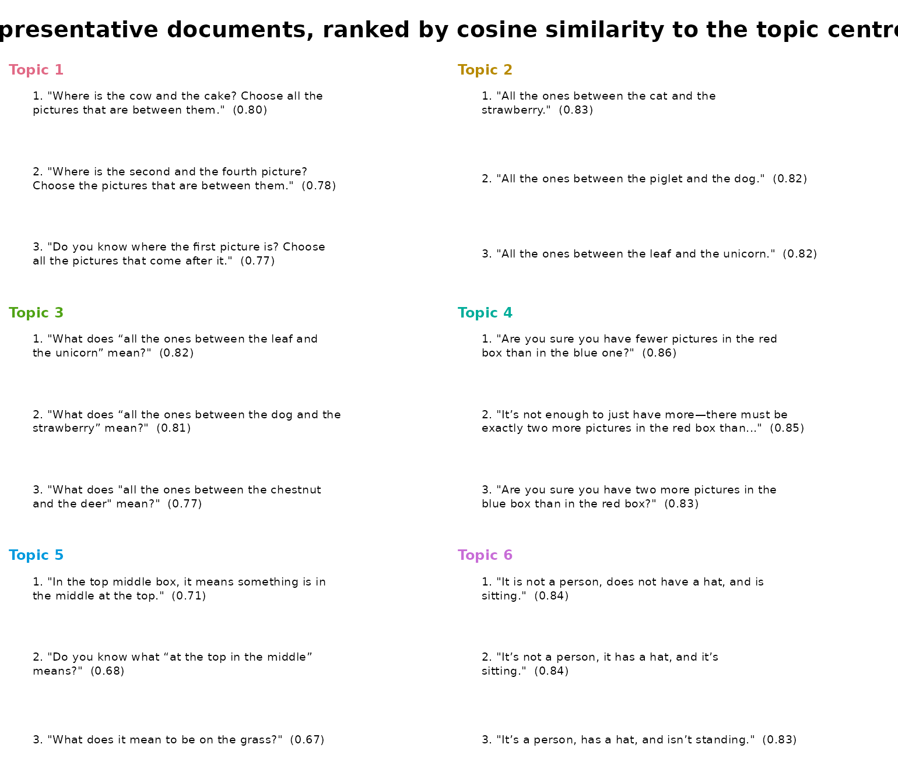
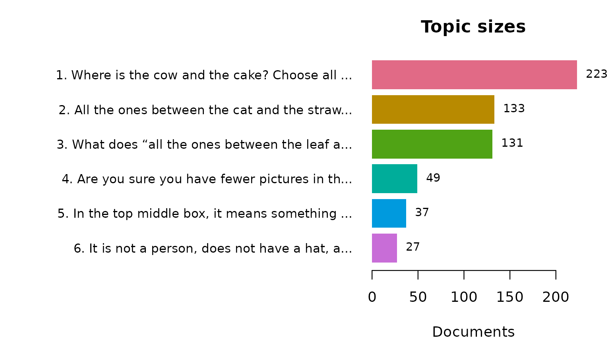
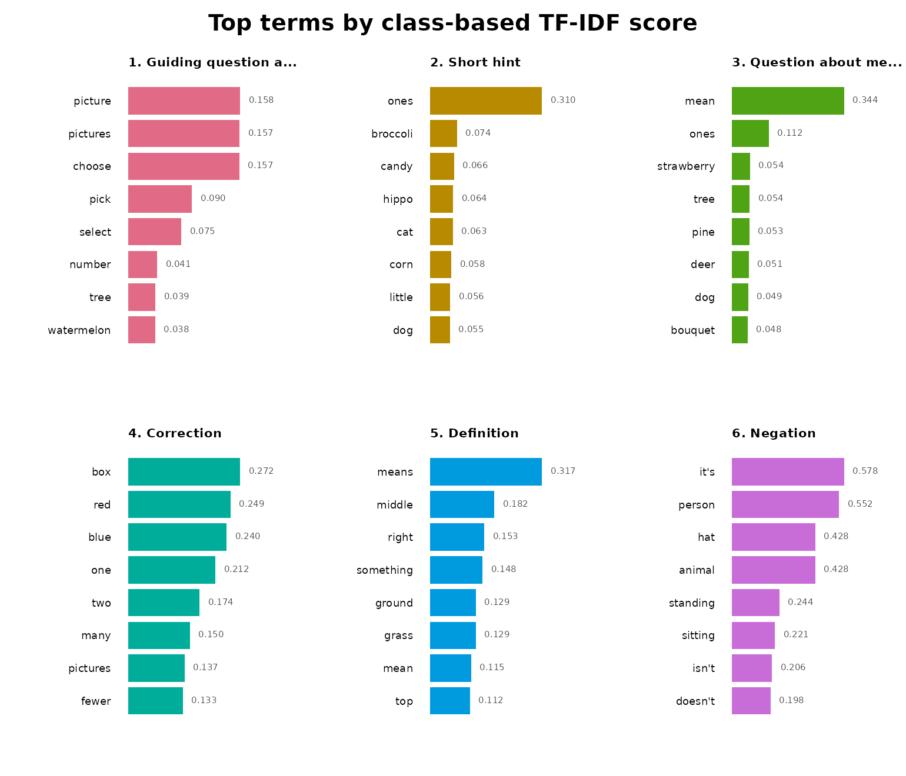
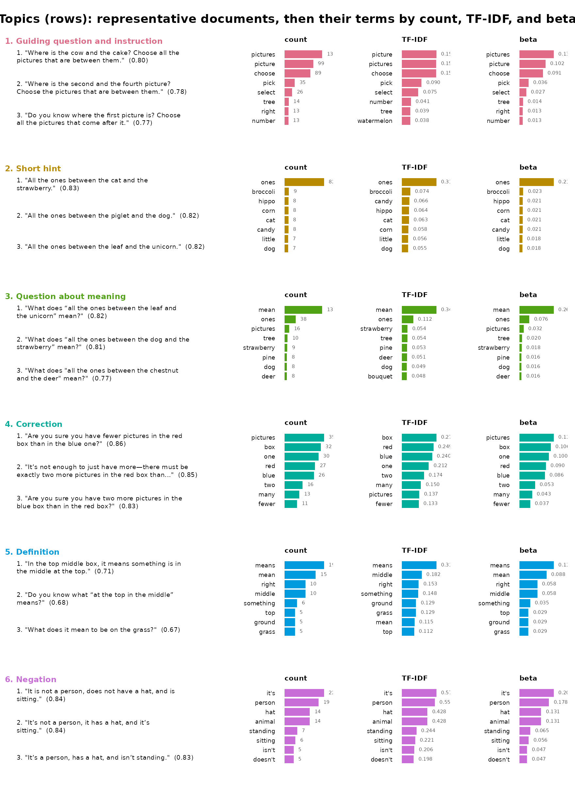

Topic Modeling Short Feedback Messages
Source:vignettes/math_vignette.Rmd
math_vignette.Rmdsbert computes Sentence-BERT embeddings natively in R. Sentence-BERT (Reimers and Gurevych, 2019) is a family of neural models that turn a whole sentence or short text into an embedding: a vector of numbers in which texts with similar meaning lie close together, even when they share few words. sbert downloads a pinned, hash-verified model, tokenizes text with the model’s own Hugging Face tokenizer, runs the model through ONNX Runtime, and pools and normalizes the result in base R. On top of the embeddings it fits topic models: texts whose embeddings are close are grouped into a topic, so a topic is defined by what its texts mean rather than by the words they share.
The feedback_translations dataset included in the
sbert package comprises 8,757 AI-generated feedback
messages originating from a mathematics learning application and
translated into English from ten source languages. Given the size of the
corpus and the substantial repetition among messages, manual inspection
is impractical. Moreover, conventional frequency-based analyses provide
limited insight into the underlying content, as they primarily capture
recurring linguistic templates rather than the semantic structure of the
feedback. For example, the most frequent message, “Try again.”, occurs
11 times. Topic modeling offers a systematic approach to identifying the
principal types of feedback generated by the application and quantifying
their relative prevalence.
To ensure methodological transparency and reproducibility, all analytical procedures are designed to be deterministic, such that repeated execution of the document yields identical numerical results, visualizations, and textual outputs under the specified computational environment.
The analysis proceeds in three stages, beginning with data-driven topic-number selection, followed by the construction of a six-topic model and a systematic evaluation of its results from three complementary perspectives:
- Model quality assessment. Topic coherence and topic diversity are evaluated to assess the semantic interpretability and distinctiveness of the identified topics prior to substantive interpretation.
- Comparative keyword analysis. Two complementary keyword representations are examined for each topic: raw within-topic term frequencies, which identify the most prevalent vocabulary, and class-based term frequency–inverse class frequency (c-TF-IDF), which identifies terms that are particularly distinctive of a given topic relative to the remaining corpus. Comparing these representations makes it possible to distinguish generally frequent expressions from vocabulary that is specifically characteristic of individual topics. Differences between the two rankings are also considered analytically informative.
- Representative message analysis. For each topic, representative messages are selected according to their proximity to the corresponding topic centroid in the embedding space. These examples provide interpretable, document-level evidence for the semantic characterization of each topic and enable the proposed topic labels to be evaluated against the original feedback content.
Together, these procedures provide a reproducible and interpretable characterization of the feedback generated by the application, combining quantitative measures of model quality with lexical evidence and representative textual examples.
The vignette builds offline. The embeddings of the 600 messages used here are stored in the package, so no model is downloaded while it is built. When you run the code yourself, the model is downloaded once (about 90 MB) and you get the same results.
The data
Many messages repeat word for word. “Try again.” alone occurs 11
times. dedupe() keeps one copy of each distinct message and
records in n how often it occurred. To keep the vignette
fast we use the first 600 distinct messages; remove head()
to model all of them.
corpus <- head(dedupe(feedback_translations$translation), 600)
head(corpus)
#> text n
#> 1 Do you know what “one more” means? 2
#> 2 There should be two more in the red than in the blue. 3
#> 3 If it’s not a person, what could it be? 2
#> 4 What does “everyone after the first one” mean? 1
#> 5 There are five pictures in the gray box. Where is there one picture less? 2
#> 6 How do the pictures alternate? 1The sentence model
models() lists the 14 models that sbert
can download. Each is pinned to one fixed version and checked against a
SHA-256 hash when it is downloaded.
models()
#> model dimensions max_tokens languages
#> 1 all-MiniLM-L6-v2 384 256 English
#> 2 all-MiniLM-L12-v2 384 128 English
#> 3 paraphrase-MiniLM-L3-v2 384 128 English
#> 4 multi-qa-MiniLM-L6-cos-v1 384 512 English
#> 5 paraphrase-multilingual-MiniLM-L12-v2 384 128 50+ languages
#> 6 all-mpnet-base-v2 768 384 English
#> 7 paraphrase-multilingual-mpnet-base-v2 768 128 50+ languages
#> 8 bge-small-en-v1.5 384 512 English
#> 9 bge-base-en-v1.5 768 512 English
#> 10 multilingual-e5-small 384 512 100+ languages
#> 11 nomic-embed-text-v1.5 768 8192 English
#> 12 jina-embeddings-v2-small-en 512 8192 English
#> 13 mxbai-embed-large-v1 1024 512 English
#> 14 potion-base-8M 256 1000000 English
#> size_mb
#> 1 90.9
#> 2 133.6
#> 3 69.5
#> 4 90.9
#> 5 479.4
#> 6 436.3
#> 7 1119.2
#> 8 133.8
#> 9 436.5
#> 10 487.4
#> 11 548.0
#> 12 130.5
#> 13 1337.6
#> 14 30.9The default, all-MiniLM-L6-v2, is a small English
sentence model that turns a text of up to 256 tokens into 384 numbers.
Download it once:
topics() and compare_topics() call
encode() for you, so the embeddings never have to be
handled by hand.
Choosing the number of topics
There is no correct number of topics. compare_topics()
fits one model for each candidate count and reports three measures for
each:
-
explained: the share of the variation in the embeddings that the topics capture. It grows with every added topic, so it cannot choose the count on its own. -
coherence: whether each topic’s top words appear together in the same messages (NPMI, from −1 to 1; higher is better). -
topic_diversity: the number of distinct words in the topics’ top-10 lists, divided by the length of all the lists together. It is 1 when no two topics share a top word.
Only explained is computed from the embeddings.
Coherence and diversity are computed from words, so they are a rough
guide. The real test of a count is whether each topic’s messages say the
same thing, which the next sections check.
sweep <- compare_topics(
corpus,
column = "text",
n_topics = c(4, 5, 6, 7, 8, 10, 12)
)
sweep#> <sbert_topic_sweep> 7 candidates, coherence measure: npmi
#> n_topics coherence topic_diversity explained
#> 4 -0.2070855 0.9250000 0.1229819
#> 5 -0.1860037 0.9400000 0.1839887
#> 6 -0.1044246 0.9166667 0.2255144
#> 7 -0.1894843 0.9142857 0.2355033
#> 8 -0.1181287 0.9000000 0.2433832
#> 10 -0.1866628 0.8600000 0.2563262
#> 12 -0.2138928 0.8151261 0.2716759
#>
#> Fitted models retained: fitted(x, n_topics = 6)
plot(sweep)
Coherence is negative at every count, because the messages are short
and two words rarely occur in the same message. It is highest at six
topics (−0.10), with eight close behind (−0.12). We use six.
fitted() returns the six-topic model that
compare_topics() already fitted, so nothing is
refitted:
topic_model <- fitted(sweep, n_topics = 6)
topic_model
#> <sbert_topic_model>
#> documents: 600
#> topics: 6
#> model: precomputed embeddings
#> algorithm: deterministic k-means (Lloyd)
#> topic sizes: 223, 133, 131, 49, 37, 27
#> between/total SS: 22.6%The topics
topic_sizes() lists the topics. The label
of each topic is the message closest to the topic’s center, cut at 60
characters, and n_documents counts its messages:
topic_sizes(topic_model)
#> topic label n_documents
#> 1 1 Where is the cow and the cake? Choose all the pictures... 223
#> 2 2 All the ones between the cat and the strawberry. 133
#> 3 3 What does “all the ones between the leaf and the... 131
#> 4 4 Are you sure you have fewer pictures in the red box than... 49
#> 5 5 In the top middle box, it means something is in the... 37
#> 6 6 It is not a person, does not have a hat, and is sitting. 27
#> proportion
#> 1 0.37166667
#> 2 0.22166667
#> 3 0.21833333
#> 4 0.08166667
#> 5 0.06166667
#> 6 0.04500000Reading the label and the messages of each topic shows that the topics are not subjects but kinds of feedback: what the message does for the learner.
- Guiding question and instruction. A question that makes the learner find something, followed by an order to act on it: Where is the cow and the cake? Choose all the pictures that are between them.
- Short hint. A fragment with no verb that restates the target: All the ones between the cat and the strawberry.
- Question about meaning. A question that asks the learner what a phrase means: What does “all the ones between the leaf and the unicorn” mean?
- Correction. A statement of what should be true, or a question that makes the learner check their answer: There should be two fewer in the red one than in the blue one. Are you sure you have fewer pictures in the red box than in the blue one?
- Definition. An explanation of what a word or phrase means: “Sitting” means your bottom is on the ground or on a chair.
- Negation. A description built from what something is not, used to rule out answers: It is not a person, does not have a hat, and is sitting. If it’s an animal, then it’s not a person.
Topics 1, 2, and 3 are about the same exercise, finding the pictures between two others, and use the same words. The model still separates them, because an instruction, a hint, and a question do different things. Topics 3 and 5 both deal with meaning, but one asks the learner and the other tells them.
name_topics() gives the topics these names, one per
topic in topic order. The names replace the labels in every table and
plot that follows; nothing is refitted.
topic_model <- name_topics(
topic_model,
c(
"Guiding question and instruction",
"Short hint",
"Question about meaning",
"Correction",
"Definition",
"Negation"
)
)
topic_sizes(topic_model)
#> topic label n_documents proportion
#> 1 1 Guiding question and instruction 223 0.37166667
#> 2 2 Short hint 133 0.22166667
#> 3 3 Question about meaning 131 0.21833333
#> 4 4 Correction 49 0.08166667
#> 5 5 Definition 37 0.06166667
#> 6 6 Negation 27 0.04500000Example messages
A few messages per topic show its range.
representatives() returns the messages closest to each
topic’s center; the first message of each topic is the one that labeled
it before we named it:
knitr::kable(
representatives(topic_model, n = 3, rank = "distance"),
digits = 2
)| topic | rank | document_id | text | distance | margin |
|---|---|---|---|---|---|
| 1 | 1 | 118 | Where is the cow and the cake? Choose all the pictures that are between them. | 0.20 | 0.28 |
| 1 | 2 | 474 | Where is the second and the fourth picture? Choose the pictures that are between them. | 0.22 | 0.19 |
| 1 | 3 | 368 | Do you know where the first picture is? Choose all the pictures that come after it. | 0.23 | 0.21 |
| 2 | 1 | 277 | All the ones between the cat and the strawberry. | 0.17 | 0.28 |
| 2 | 2 | 237 | All the ones between the piglet and the dog. | 0.18 | 0.30 |
| 2 | 3 | 226 | All the ones between the leaf and the unicorn. | 0.18 | 0.23 |
| 3 | 1 | 227 | What does “all the ones between the leaf and the unicorn” mean? | 0.18 | 0.29 |
| 3 | 2 | 87 | What does “all the ones between the dog and the strawberry” mean? | 0.19 | 0.29 |
| 3 | 3 | 479 | What does “all the ones between the chestnut and the deer” mean? | 0.23 | 0.29 |
| 4 | 1 | 218 | Are you sure you have fewer pictures in the red box than in the blue one? | 0.14 | 0.46 |
| 4 | 2 | 62 | It’s not enough to just have more—there must be exactly two more pictures in the red box than in the blue box. | 0.15 | 0.48 |
| 4 | 3 | 68 | Are you sure you have two more pictures in the blue box than in the red box? | 0.17 | 0.40 |
| 5 | 1 | 364 | In the top middle box, it means something is in the middle at the top. | 0.29 | 0.16 |
| 5 | 2 | 28 | Do you know what “at the top in the middle” means? | 0.32 | 0.15 |
| 5 | 3 | 74 | What does it mean to be on the grass? | 0.33 | 0.23 |
| 6 | 1 | 366 | It is not a person, does not have a hat, and is sitting. | 0.16 | 0.50 |
| 6 | 2 | 31 | It’s not a person, it has a hat, and it’s sitting. | 0.16 | 0.47 |
| 6 | 3 | 18 | It’s a person, has a hat, and isn’t standing. | 0.17 | 0.42 |
distance is the cosine distance from the message to the
topic’s center: the smaller, the more typical. margin is
how much farther the message is from the next closest topic: the larger,
the more clearly it belongs to its own. The default,
rank = "margin", ranks by margin instead,
which favors messages that could belong to no other topic.
The plot shows the same messages, with the similarity to the center in parentheses:
plot(topic_model, type = "representatives", n_representatives = 3)
Topic sizes
n_documents counts distinct messages. Because we removed
duplicates, a message that was shown 11 times counts once. Passing the
counts as weights adds n_weighted and
weighted_share, which count every time a message was
shown.
topic_sizes(topic_model, weights = corpus$n)
#> topic label n_documents proportion n_weighted
#> 1 1 Guiding question and instruction 223 0.37166667 267
#> 2 2 Short hint 133 0.22166667 162
#> 3 3 Question about meaning 131 0.21833333 138
#> 4 4 Correction 49 0.08166667 76
#> 5 5 Definition 37 0.06166667 57
#> 6 6 Negation 27 0.04500000 40
#> weighted_share
#> 1 0.36081081
#> 2 0.21891892
#> 3 0.18648649
#> 4 0.10270270
#> 5 0.07702703
#> 6 0.05405405Corrections (topic 4) grow from 8.2% of the distinct messages to 10.3% of all messages shown, so the app repeated its corrections more often than its other kinds of feedback.
plot(topic_model, type = "sizes")
The words each topic uses
Words do not define a topic here; the sentences do. Still, the words
a topic uses more than the others can be useful, for example to search
the messages or to see how a topic is phrased. terms()
lists them. The score is class-based TF-IDF: it is high for
words that are frequent in this topic and rare in the others.
terms(topic_model, n = 5)
#> topic label term rank score frequency
#> 1 1 Guiding question and instruction picture 1 0.15812657 99
#> 2 1 Guiding question and instruction pictures 2 0.15734447 130
#> 3 1 Guiding question and instruction choose 3 0.15707789 89
#> 4 1 Guiding question and instruction pick 4 0.09026252 35
#> 5 1 Guiding question and instruction select 5 0.07513736 26
#> 6 2 Short hint ones 1 0.30963920 82
#> 7 2 Short hint broccoli 2 0.07420924 9
#> 8 2 Short hint candy 3 0.06596377 8
#> 9 2 Short hint hippo 4 0.06377882 8
#> 10 2 Short hint cat 5 0.06277479 8
#> 11 3 Question about meaning mean 1 0.34359216 130
#> 12 3 Question about meaning ones 2 0.11237273 38
#> 13 3 Question about meaning strawberry 3 0.05446666 9
#> 14 3 Question about meaning tree 4 0.05377455 10
#> 15 3 Question about meaning pine 5 0.05259430 8
#> 16 4 Correction box 1 0.27236446 32
#> 17 4 Correction red 2 0.24904937 27
#> 18 4 Correction blue 3 0.23982532 26
#> 19 4 Correction one 4 0.21204418 30
#> 20 4 Correction two 5 0.17403296 16
#> 21 5 Definition means 1 0.31653087 19
#> 22 5 Definition middle 2 0.18182559 10
#> 23 5 Definition right 3 0.15309964 10
#> 24 5 Definition something 4 0.14845195 6
#> 25 5 Definition grass 5 0.12897006 5
#> 26 6 Negation it's 1 0.57814172 22
#> 27 6 Negation person 2 0.55210406 19
#> 28 6 Negation animal 3 0.42837319 14
#> 29 6 Negation hat 4 0.42837319 14
#> 30 6 Negation standing 5 0.24399916 7
#> beta
#> 1 0.10174717
#> 2 0.13360740
#> 3 0.09146968
#> 4 0.03597122
#> 5 0.02672148
#> 6 0.21025641
#> 7 0.02307692
#> 8 0.02051282
#> 9 0.02051282
#> 10 0.02051282
#> 11 0.26104418
#> 12 0.07630522
#> 13 0.01807229
#> 14 0.02008032
#> 15 0.01606426
#> 16 0.10631229
#> 17 0.08970100
#> 18 0.08637874
#> 19 0.09966777
#> 20 0.05315615
#> 21 0.11111111
#> 22 0.05847953
#> 23 0.05847953
#> 24 0.03508772
#> 25 0.02923977
#> 26 0.20560748
#> 27 0.17757009
#> 28 0.13084112
#> 29 0.13084112
#> 30 0.06542056
plot(topic_model, type = "terms")
The words show why they make poor names. They describe what the messages are about, not what they do. Topic 2’s top words, after ones, are names of pictures (broccoli, candy, hippo) that change from message to message, and nothing in them says that the topic is made of short hints. Topic 6’s words (person, animal, hat) name the pictures, not the negation that defines the topic. And topics 2 and 3 share the word ones, although one gives a hint and the other asks a question.
summary() adds the coherence of each topic’s top words.
It is lowest for topic 2 and highest for topic 4, whose messages repeat
the same few words (box, red, blue):
summary(topic_model)
#> Semantic topic model summary
#> documents: 600
#> topics: 6
#> model: precomputed embeddings
#> between/total SS: 22.6%
#> mean npmi coherence: -0.1044
#> topic topic_diversity: 0.917 (top 10 terms)
#>
#> topic label n_documents proportion coherence
#> 1 Guiding question and instruction 223 0.37167 -0.2368
#> 2 Short hint 133 0.22167 -0.4150
#> 3 Question about meaning 131 0.21833 -0.2564
#> 4 Correction 49 0.08167 0.3011
#> 5 Definition 37 0.06167 -0.2043
#> 6 Negation 27 0.04500 0.1849To name topics by their three top words instead of a sentence, fit
with label = "terms".
Everything in one figure
type = "fit" shows each topic’s example messages and,
beside them, its words, one row per topic:
plot(topic_model, type = "fit", n_terms = 8, n_representatives = 3)
Next steps
-
predict(topic_model, new_text)assigns new messages to these topics without refitting. -
topic_membership(topic_model)gives each message a probability for every topic instead of a single topic. -
segment = "sentence"intopics()orcompare_topics()splits each message into sentences and models the sentences.topic_gamma()then gives the mix of topics in each message. -
topic_corpus()encodes the text once so that you can fit many models without encoding again. - To model the original messages in their ten source languages, use
topics(feedback_translations, column = "feedback", n_topics = 6, model = "paraphrase-multilingual-MiniLM-L12-v2").
The article Topic Modeling COVID-19 Research Abstracts on the package website works through a larger corpus of long research abstracts.